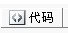

第12届世界连珠锦标赛QT第五轮<戴晓涵 白胜>
首页
五子棋新闻
#1 第12届世界连珠锦标赛QT第五轮<戴晓涵 白胜> 作者：^版徒 发表时间：2011-8-2 23:21:36
=======上图对应的爱五子棋谱代码如下，以便你拆解：========
h8h7g7g8e10i8i7j6h6g6j9j5i6j4j3h9j8g5i9j10k7h10k8k10i10f5e4h5i5l7k9l10k6k5l6m5d5f6f7e7h4f8g9h11c6f3c10f10c9c8e8e9h12g4i3i4g2m10n10l4
======================================================
［ 小丸.net 于 2011-8-3 0:21:54 时花20金币送鲜花一朵］
［ 小丸.net 于 2011-8-3 0:22:03 时花20金币送鲜花一朵］
［ 猪小姐 于 2011-8-3 0:29:53 时花20金币送鲜花一朵］
［此帖子已被 小丸.net 在 2011-8-3 0:35:10 编辑过］
［此帖子已被 小丸.net 在 2011-8-3 0:39:22 编辑过］
［此帖子已被 ^版徒 在 2011-8-3 2:28:12 编辑过］
［此帖子已被 ^版徒 在 2011-8-3 4:43:11 编辑过］
［ 蓝天蓝 于 2011-8-3 6:44:45 时花20金币送鲜花一朵］
#2 Re:第12届世界连珠锦标赛QT第五轮<北京时间23:30开始> 作者：猪小姐 发表时间：2011-8-2 23:23:39
 沙发。
沙发。 ［ ^版徒 于 2011-8-2 23:29:40 时花20金币送鲜花一朵］
#3 Re:第12届世界连珠锦标赛QT第五轮<北京时间23:30开始> 作者：洪四 发表时间：2011-8-2 23:25:50
传说中的沙发？
加油！
［ ^版徒 于 2011-8-2 23:29:29 时花20金币送鲜花一朵］
#4 Re:第12届世界连珠锦标赛QT第五轮<北京时间23:30开始> 作者：河北穿云 发表时间：2011-8-2 23:29:24
旁观
#5 Re:第12届世界连珠锦标赛QT第五轮<北京时间23:30开始> 作者：梧桐风 发表时间：2011-8-2 23:29:54
矮油，这才QT就通宵了，楼下有通宵的报道啊，晚上好看棋
#6 Re:第12届世界连珠锦标赛QT第五轮<北京时间23:30开始> 作者：^版徒 发表时间：2011-8-2 23:30:15
你个洪四,哈哈,我以为你是沙发,,,,,
#7 Re:第12届世界连珠锦标赛QT第五轮<北京时间23:30开始> 作者：死劲哭 发表时间：2011-8-2 23:31:08
一直守在这里，直到看到小天老师胜出
#8 Re:第12届世界连珠锦标赛QT第五轮<北京时间23:30开始> 作者：猪小姐 发表时间：2011-8-2 23:32:15
 原来抢沙发还带送花的啊。以后闲着俺就来消灭0回复。。。。。。
原来抢沙发还带送花的啊。以后闲着俺就来消灭0回复。。。。。。
#9 Re:第12届世界连珠锦标赛QT第五轮<北京时间23:30开始> 作者：第五象限 发表时间：2011-8-2 23:32:23
赛程表上显示每轮3.5小时 晚餐1.5小时。上一轮用时99+97min 就是3小时16分钟 剩下的时间再加上晚餐时间可以休息1小时44分钟。。直播网站的延迟似乎很严重啊［此帖子已被 第五象限 在 2011-8-2 23:33:30 编辑过］
［此帖子已被 第五象限 在 2011-8-2 23:34:08 编辑过］
#10 Re:第12届世界连珠锦标赛QT第五轮<北京时间23:30开始> 作者：洪四 发表时间：2011-8-2 23:33:52
可能是网络延迟吧，才差那11秒啊！
喝醉酒还能坚持到现在等围观，送个花花也值得吧？
#11 Re:第12届世界连珠锦标赛QT第五轮<北京时间23:30开始> 作者：^版徒 发表时间：2011-8-2 23:34:21
那是
#12 Re:第12届世界连珠锦标赛QT第五轮<北京时间23:30开始> 作者：怪 发表时间：2011-8-2 23:37:14
从上一局看小天进入状态了
#13 Re:第12届世界连珠锦标赛QT第五轮<北京时间23:30开始> 作者：杨文浩 发表时间：2011-8-2 23:46:47
看完比赛不用通宵的吧？？？跟新延迟不会那么慢吧？？
#14 Re:第12届世界连珠锦标赛QT第五轮<北京时间23:30开始> 作者：周光乐 发表时间：2011-8-2 23:47:09
加油啊啊啊啊
#15 Re:第12届世界连珠锦标赛QT第五轮<北京时间23:30开始> 作者：gerbo 发表时间：2011-8-3 0:01:41
 还在上班。。偷偷溜出来看下新闻，还得等下马上赶回去。。。3号的晚上再来观看了，各位通宵的朋友准备了什么吃的啊？
还在上班。。偷偷溜出来看下新闻，还得等下马上赶回去。。。3号的晚上再来观看了，各位通宵的朋友准备了什么吃的啊？
#16 Re:第12届世界连珠锦标赛QT第五轮<北京时间23:30开始> 作者：珍惜你和我 发表时间：2011-8-3 0:11:13
比赛开始了
#17 Re:第12届世界连珠锦标赛QT第五轮<北京时间23:30开始> 作者：^版徒 发表时间：2011-8-3 0:11:32
=======上图对应的爱五子棋谱代码如下，以便你拆解：========
h8h7g7g8
======================================================［此帖子已被 ^版徒 在 2011-8-3 0:12:01 编辑过］
#18 Re:第12届世界连珠锦标赛QT第五轮<北京时间23:30开始> 作者：花落无痕 发表时间：2011-8-3 0:13:32
第五轮已经开局 Soos VS Lin
=======上图对应的爱五子棋谱代码如下，以便你拆解：========
h8i9i6h9j8i10i8g8j11j9k8l8g9i7k9k10l10
======================================================
#19 Re:第12届世界连珠锦标赛QT第五轮<北京时间23:30开始> 作者：卯寻月 发表时间：2011-8-3 0:13:35
看来的确是24：00开始的~~
#20 Re:第12届世界连珠锦标赛QT第五轮<北京时间23:30开始> 作者：花落无痕 发表时间：2011-8-3 0:15:44
Kamiya - Sumarokov
=======上图对应的爱五子棋谱代码如下，以便你拆解：========
h8i9g7h9i8j8j9h10
====================================================== ［ ^版徒 于 2011-8-3 0:16:24 时花20金币送鲜花一朵］
#21 Re:第12届世界连珠锦标赛QT第五轮<Dai Xiaohan白VS Nikonov黑> 作者：花落无痕 发表时间：2011-8-3 0:19:03
=======上图对应的爱五子棋谱代码如下，以便你拆解：========
h8h9i10i9
======================================================［此帖子已被 ^版徒 在 2011-8-3 0:22:22 编辑过］
#22 Re:第12届世界连珠锦标赛QT第五轮<Dai Xiaohan白VS Nikonov黑> 作者：梧桐风 发表时间：2011-8-3 0:20:31
没表明黑白方啊
#23 Re:第12届世界连珠锦标赛QT第五轮<Dai Xiaohan白VS Nikonov黑> 作者：小丸.net 发表时间：2011-8-3 0:20:56
小天童鞋，你不是一个人在战斗。。。。
#24 Re:第12届世界连珠锦标赛QT第五轮<Dai Xiaohan白VS Nikonov黑> 作者：花落无痕 发表时间：2011-8-3 0:21:18
Rybka - Hou
=======上图对应的爱五子棋谱代码如下，以便你拆解：========
h8i9g6i10
======================================================
#25 Re:第12届世界连珠锦标赛QT第五轮<Dai Xiaohan白VS Nikonov黑> 作者：花落无痕 发表时间：2011-8-3 0:23:22
黑 ―― 白 
#26 Re:第12届世界连珠锦标赛QT第五轮<Dai Xiaohan白VS Nikonov黑> 作者：珍惜你和我 发表时间：2011-8-3 0:24:59
发行，安茨的对局，基本上都是开山月，岚月，看来，他对这个开局准备很充分。小天对日本的两个棋手，开的都是恒星，看来日本人对寒星，恒星研究的比较透
#27 Re:第12届世界连珠锦标赛QT第五轮<Dai Xiaohan白VS Nikonov黑> 作者：花落无痕 发表时间：2011-8-3 0:25:01
很高兴能为大家做点事情，我们一起分享快乐 ［ 卯寻月 于 2011-8-3 0:39:44 时花20金币送鲜花一朵］
#28 Re:第12届世界连珠锦标赛QT第五轮<Dai Xiaohan白VS Nikonov黑> 作者：罔两 发表时间：2011-8-3 0:26:52
赌徒，小天这盘，花月这个5是不是接近白必胜了？
#29 Re:第12届世界连珠锦标赛QT第五轮<Dai Xiaohan白VS Nikonov黑> 作者：花落无痕 发表时间：2011-8-3 0:27:06
Okabe - H�bem�gi
=======上图对应的爱五子棋谱代码如下，以便你拆解：========
h8h9i10i9j7g9
======================================================
#30 Re:第12届世界连珠锦标赛QT第五轮<Dai Xiaohan白VS Nikonov黑> 作者：^版徒 发表时间：2011-8-3 0:27:37
=======上图对应的爱五子棋谱代码如下，以便你拆解：========
h8h7g7g8e10i8i7j6h6g6j9j5i6j4j3h9j8g5
======================================================
#31 Re:Re:第12届世界连珠锦标赛QT第五轮<Dai Xiaohan白VS Nikonov黑> 作者：罔两 发表时间：2011-8-3 0:27:50
引用：
原文由 花落无痕 发表于 2011-8-3 0:25:01 :
很高兴能为大家做点事情，我们一起分享快乐
你是四川人吧？
#32 Re:第12届世界连珠锦标赛QT第五轮<Dai Xiaohan白VS Nikonov黑> 作者：花落无痕 发表时间：2011-8-3 0:30:54
Soos - Lin
=======上图对应的爱五子棋谱代码如下，以便你拆解：========
h8i9i6h9j8i10i8g8j11j9k8l8g9i7k9k10l10h10j7h5m9
======================================================
#33 Re:第12届世界连珠锦标赛QT第五轮<Dai Xiaohan白VS Nikonov黑> 作者：梧桐风 发表时间：2011-8-3 0:31:30
日本的是花月系列的变化
#34 Re:第12届世界连珠锦标赛QT第五轮<Dai Xiaohan白VS Nikonov黑> 作者：小丸.net 发表时间：2011-8-3 0:31:56
［此帖子已被 小丸.net 在 2011-8-3 0:33:48 编辑过］
［ 猪小姐 于 2011-8-3 0:45:10 时花20金币送鲜花一朵］
#35 Re:Re:第12届世界连珠锦标赛QT第五轮<Dai Xiaohan白VS Nikonov黑> 作者：猪小姐 发表时间：2011-8-3 0:32:33
引用：
原文由 小丸.net 发表于 2011-8-3 0:20:56 :
小天童鞋，你不是一个人在战斗。。。。
- -|||是整个爱网都在看他战斗。。。。。。
#36 Re:第12届世界连珠锦标赛QT第五轮<Dai Xiaohan白VS Nikonov黑> 作者：珍惜你和我 发表时间：2011-8-3 0:39:14
安茨那个又是必胜了，厉害，我靠
#37 Re:Re:第12届世界连珠锦标赛QT第五轮<Dai Xiaohan白VS Nikonov黑> 作者：小红眼镜 发表时间：2011-8-3 0:39:36
引用：
原文由 小丸.net 发表于 2011-8-3 0:31:56 :
［此帖子已被 小丸.net 在 2011-8-3 0:33:48 编辑过］
丸子的好暴力啊。。。居然不是截图。。。。。。。。。
#38 Re:第12届世界连珠锦标赛QT第五轮<Dai Xiaohan白VS Nikonov黑> 作者：白河愁 发表时间：2011-8-3 0:40:31
这样又很难下了啊……
#39 Re:第12届世界连珠锦标赛QT第五轮<Dai Xiaohan白VS Nikonov黑> 作者：白河愁 发表时间：2011-8-3 0:40:51
这样又很难下了啊……
#40 Re:第12届世界连珠锦标赛QT第五轮<Dai Xiaohan白VS Nikonov黑> 作者：小丸.net 发表时间：2011-8-3 0:42:53
我发的那个会自动更新的。。。
#41 Re:第12届世界连珠锦标赛QT第五轮<Dai Xiaohan白VS Nikonov黑> 作者：杨文浩 发表时间：2011-8-3 0:43:13
说丸子是五子棋界的网络技术第一人，谁敢不服？
#42 Re:第12届世界连珠锦标赛QT第五轮<Dai Xiaohan白VS Nikonov黑> 作者：花落无痕 发表时间：2011-8-3 0:44:19
不会弄 不然可以把各桌都转过来
不然可以把各桌都转过来
#43 Re:第12届世界连珠锦标赛QT第五轮<Dai Xiaohan白VS Nikonov黑> 作者：^版徒 发表时间：2011-8-3 0:44:20
牛人啊
#44 Re:第12届世界连珠锦标赛QT第五轮<Dai Xiaohan白VS Nikonov黑> 作者：梧桐风 发表时间：2011-8-3 0:46:25
请继续发谱，照顾一下广大手机党
#45 Re:第12届世界连珠锦标赛QT第五轮<Dai Xiaohan白VS Nikonov黑> 作者：杨文浩 发表时间：2011-8-3 0:46:25
这样就省了赌徒大师一点力气了
#46 Re:第12届世界连珠锦标赛QT第五轮<Dai Xiaohan白VS Nikonov黑> 作者：杨文浩 发表时间：2011-8-3 0:47:46
刚想说不用再发谱了，直接看丸子发的那个，才发现还有很多手机党，这样赌徒大师又要辛苦你了呢
#47 Re:第12届世界连珠锦标赛QT第五轮<Dai Xiaohan白VS Nikonov黑> 作者：^版徒 发表时间：2011-8-3 0:48:04
手机看不到自动更新程序?
#48 Re:第12届世界连珠锦标赛QT第五轮<Dai Xiaohan白VS Nikonov黑> 作者：梧桐风 发表时间：2011-8-3 0:48:13
赌徒大师力气不能省的！坚决不能！
#49 Re:第12届世界连珠锦标赛QT第五轮<Dai Xiaohan白VS Nikonov黑> 作者：花落无痕 发表时间：2011-8-3 0:48:53
［此帖子已被 花落无痕 在 2011-8-3 0:51:07 编辑过］
#50 Re:第12届世界连珠锦标赛QT第五轮<Dai Xiaohan白VS Nikonov黑> 作者：小丸.net 发表时间：2011-8-3 0:49:35
其实很简单啦，给你们一段代码：
<applet codebase="http://www.renju.net/media/" code="RenLibApplet.class" width=345 height=375>alt="Your browser does not have Java installed. Please go to www.java.com and press Download Free Java."
<PARAM NAME="moves" VALUE="h8"><PARAM NAME="size" VALUE="19"><PARAM NAME="showOneLineComment" VALUE="0">
<PARAM NAME="showMultiLineComment" VALUE="0">
<PARAM NAME="showCoordinates" VALUE="1">
<PARAM NAME="showNumbers" VALUE="1">
<PARAM NAME="showCommands" VALUE="1">
<PARAM NAME="showBoard" VALUE="1">
<PARAM NAME="backgroundColor" VALUE="225|225|225">
<PARAM NAME="urlOnlineGame" VALUE="http://61.57.140.160/~renju/admin/show_game.php?gameid=44940&admin=">
<PARAM NAME="refreshInterval" VALUE="180">
</applet>
注意看最后第三行，<PARAM NAME="urlOnlineGame" VALUE="http://61.57.140.160/~renju/admin/show_game.php?gameid=44940&admin=">
里面的GAMEID=44940，大家把他换成那一台的ID就行了，也就是renju.net上的链接 http://www.renju.net/media/games.php?gameid=44940
不过以上代码要在“”方式下发哦
［此帖子已被 小丸.net 在 2011-8-3 1:08:24 编辑过］
#51 Re:第12届世界连珠锦标赛QT第五轮<Dai Xiaohan白VS Nikonov黑> 作者：梧桐风 发表时间：2011-8-3 0:51:02
手机当然看不了虚拟机的更新啦，要不然在爱网看转播干嘛呢
#52 Re:第12届世界连珠锦标赛QT第五轮<Dai Xiaohan白VS Nikonov黑> 作者：杨文浩 发表时间：2011-8-3 0:52:32
这就是ants的恐怖实力啊！小天一定要灭了他啊！！！
#53 Re:第12届世界连珠锦标赛QT第五轮<Dai Xiaohan白VS Nikonov黑> 作者：^版徒 发表时间：2011-8-3 0:53:03
=======上图对应的爱五子棋谱代码如下，以便你拆解：========
h8h7g7g8e10i8i7j6h6g6j9j5i6j4j3h9j8g5i9j10k7h10k8k10i10f5e4h5i5l7k9l10k6k5l6m5d5f6
======================================================哦
#54 Re:第12届世界连珠锦标赛QT第五轮<Kamiya - Sumarokov> 作者：花落无痕 发表时间：2011-8-3 0:54:09
［此帖子已被 花落无痕 在 2011-8-3 1:03:18 编辑过］
#55 Re:第12届世界连珠锦标赛QT第五轮<Dai Xiaohan白VS Nikonov黑> 作者：梧桐风 发表时间：2011-8-3 0:55:07
哭哭童鞋发谱嘛
#56 Re:第12届世界连珠锦标赛QT第五轮<Dai Xiaohan白VS Nikonov黑> 作者：杨文浩 发表时间：2011-8-3 0:55:17
我这个代码盲，对于手机能看爱五子棋网就觉得已经很高级了
#57 Re:第12届世界连珠锦标赛QT第五轮<Dai Xiaohan白VS Nikonov黑> 作者：罔两 发表时间：2011-8-3 0:57:21
［此帖子已被 罔两 在 2011-8-3 1:21:40 编辑过］
#58 Re:第12届世界连珠锦标赛QT第五轮<Dai Xiaohan白VS Nikonov黑> 作者：小丸.net 发表时间：2011-8-3 0:57:28
54楼的小妹，玩砸了吧。。。。。
#59 Re:第12届世界连珠锦标赛QT第五轮<Dai Xiaohan白VS Nikonov黑> 作者：杨文浩 发表时间：2011-8-3 1:05:13
除了小天和河村的两盘，另外几盘棋似乎都已经可以地毯了
#60 Re:第12届世界连珠锦标赛QT第五轮<Dai Xiaohan白VS Nikonov黑> 作者：卯寻月 发表时间：2011-8-3 1:06:31
 算了，放弃了~~
算了，放弃了~~ ［此帖子已被 卯寻月 在 2011-8-3 1:11:34 编辑过］
［此帖子已被 卯寻月 在 2011-8-3 1:19:04 编辑过］
#61 Re:第12届世界连珠锦标赛QT第五轮<Dai Xiaohan白VS Nikonov黑> 作者：小丸.net 发表时间：2011-8-3 1:12:11
罔两童鞋，我准备找你做我的学生。。。。。楼上，你也玩砸了。。。。
#62 Re:第12届世界连珠锦标赛QT第五轮<Dai Xiaohan白VS Nikonov黑> 作者：非鸟 发表时间：2011-8-3 1:12:57
高级夜战开启
#63 Re:Re:第12届世界连珠锦标赛QT第五轮<Dai Xiaohan白VS Nikonov黑> 作者：极地剑客 发表时间：2011-8-3 1:16:53
引用：
原文由 非鸟 发表于 2011-8-3 1:12:57 :
高级夜战开启
嘿嘿嘿嘿
#64 Re:第12届世界连珠锦标赛QT第五轮<Dai Xiaohan白VS Nikonov黑> 作者：^版徒 发表时间：2011-8-3 1:17:01
鸟
大师
#65 Re:第12届世界连珠锦标赛QT第五轮<Dai Xiaohan白VS Nikonov黑> 作者：梧桐风 发表时间：2011-8-3 1:17:37
还是都发谱嘛，发谱有花花送的。你说第三轮处于手机党时，哪个发谱的我没送过？
#66 Re:第12届世界连珠锦标赛QT第五轮<Dai Xiaohan白VS Nikonov黑> 作者：^版徒 发表时间：2011-8-3 1:20:31
=======上图对应的爱五子棋谱代码如下，以便你拆解：========
h8h7g7g8e10i8i7j6h6g6j9j5i6j4j3h9j8g5i9j10k7h10k8k10i10f5e4h5i5l7k9l10k6k5l6m5d5f6f7e7
======================================================手机党专用
#67 Re:第12届世界连珠锦标赛QT第五轮<Dai Xiaohan白VS Nikonov黑> 作者：非鸟 发表时间：2011-8-3 1:21:45
ants 下了20多年果然厉害啊
#68 Re:第12届世界连珠锦标赛QT第五轮<Dai Xiaohan白VS Nikonov黑> 作者：虎哥 发表时间：2011-8-3 1:24:20
罔两就是干这个的
#69 Re:Re:第12届世界连珠锦标赛QT第五轮<Dai Xiaohan白VS Nikonov黑> 作者：罔两 发表时间：2011-8-3 1:27:59
引用：
原文由 小丸.net 发表于 2011-8-3 1:12:11 :
罔两童鞋，我准备找你做我的学生。。。。。楼上，你也玩砸了。。。。
呵呵，我好歹以前也是JAVA程序员。只是现在不写代码了。
<applet> 标签用的不是太多。 问下，这段代码貌似运行后中间的那段直接解析为class文件了？
#70 Re:第12届世界连珠锦标赛QT第五轮<Dai Xiaohan白VS Nikonov黑> 作者：炫飞冰弦 发表时间：2011-8-3 1:30:30
这么晚了，罔两还不进圈睡觉吗
#71 Re:第12届世界连珠锦标赛QT第五轮<Dai Xiaohan白VS Nikonov黑> 作者：杨文浩 发表时间：2011-8-3 1:30:58
河村那一盘终于开始动了，难道是传说中的长考1小时直接地毯？
#72 Re:第12届世界连珠锦标赛QT第五轮<Dai Xiaohan白VS Nikonov黑> 作者：花落无痕 发表时间：2011-8-3 1:31:40
#73 Re:第12届世界连珠锦标赛QT第五轮<Dai Xiaohan白VS Nikonov黑> 作者：罔两 发表时间：2011-8-3 1:31:41
。。。楼上的大妈，你半夜起来又做何解释？
#74 Re:Re:Re:第12届世界连珠锦标赛QT第五轮<Dai Xiaohan白VS Nikonov黑> 作者：小丸.net 发表时间：2011-8-3 1:32:01
引用：
原文由 罔两 发表于 2011-8-3 1:27:59 :
引用：
原文由 小丸.net 发表于 2011-8-3 1:12:11 :
罔两童鞋，我准备找你做我的学生。。。。。楼上，你也玩砸了。。。。
呵呵，我好歹以前也是JAVA程序员。只是现在不写代码了。
应该是的吧。。。。。。
#75 Re:第12届世界连珠锦标赛QT第五轮<Dai Xiaohan白VS Nikonov黑> 作者：罔两 发表时间：2011-8-3 1:33:37
这刷新速度好快，没睡觉的人很多呀！！ 强大的精神支持力。。。。
楼上大妈指的炫飞*冰弦
#76 Re:第12届世界连珠锦标赛QT第五轮<Dai Xiaohan白VS Nikonov黑> 作者：^版徒 发表时间：2011-8-3 1:36:53
=======上图对应的爱五子棋谱代码如下，以便你拆解：========
h8h7g7g8e10i8i7j6h6g6j9j5i6j4j3h9j8g5i9j10k7h10k8k10i10f5e4h5i5l7k9l10k6k5l6m5d5f6f7e7h4f8g9h11c6f3
======================================================黑要死了
#77 Re:Re:第12届世界连珠锦标赛QT第五轮<Dai Xiaohan白VS Nikonov黑> 作者：花落无痕 发表时间：2011-8-3 1:43:29
多谢指教，还是不明其理
#78 Re:第12届世界连珠锦标赛QT第五轮<Dai Xiaohan白VS Nikonov黑> 作者：杨文浩 发表时间：2011-8-3 1:43:29
果然是长考一小时地毯啊，日本棋手的计算力还真不错，看来只有小天这盘棋有点看头了
#79 Re:第12届世界连珠锦标赛QT第五轮<Dai Xiaohan白VS Nikonov黑> 作者：潇洒 发表时间：2011-8-3 1:49:39
无禁的怎么没直播。。
#80 Re:第12届世界连珠锦标赛QT第五轮<Dai Xiaohan白VS Nikonov黑> 作者：小丸.net 发表时间：2011-8-3 2:04:25
技术不过关，不要发动态谱了。会出问题的。
#81 Re:第12届世界连珠锦标赛QT第五轮<Dai Xiaohan白VS Nikonov黑> 作者：杨文浩 发表时间：2011-8-3 2:10:02
ants走出了那个让人一看就想投降的35啊，太厉害了，只有小天还在继续奋战了
#82 Re:Re:Re:第12届世界连珠锦标赛QT第五轮<Dai Xiaohan白VS Nikonov黑> 作者：罔两 发表时间：2011-8-3 2:17:44
引用：
原文由 花落无痕 发表于 2011-8-3 1:43:29 :
多谢指教，还是不明其理
黑局部现在杀不出，但是整个白从上面到右边到下面都有很多很多的成杀点。
白只要不出漏洞，黑没办法防了。因为只能防住一块。
#83 Re:第12届世界连珠锦标赛QT第五轮<Dai Xiaohan白VS Nikonov黑> 作者：罔两 发表时间：2011-8-3 2:19:00
上个图给你看比较直观
［此帖子已被 罔两 在 2011-8-3 2:19:39 编辑过］
#84 Re:第12届世界连珠锦标赛QT第五轮<Dai Xiaohan白VS Nikonov黑> 作者：^版徒 发表时间：2011-8-3 2:20:34
=======上图对应的爱五子棋谱代码如下，以便你拆解：========
h8h7g7g8e10i8i7j6h6g6j9j5i6j4j3h9j8g5i9j10k7h10k8k10i10f5e4h5i5l7k9l10k6k5l6m5d5f6f7e7h4f8g9h11c6f3c10f10c9c8e8
======================================================小天地毯
#85 Re:第12届世界连珠锦标赛QT第五轮<Dai Xiaohan白VS Nikonov黑> 作者：罔两 发表时间：2011-8-3 2:21:10
白应该杀了，就看小天算VCT了！！等待吧~~
#86 Re:第12届世界连珠锦标赛QT第五轮<Dai Xiaohan白VS Nikonov黑> 作者：珍惜你和我 发表时间：2011-8-3 2:25:12
目前黑石显示，小天已经必胜， 小天加油，长考也要杀出来
#87 Re:第12届世界连珠锦标赛QT第五轮<Dai Xiaohan白VS Nikonov黑> 作者：^版徒 发表时间：2011-8-3 2:25:50
=======上图对应的爱五子棋谱代码如下，以便你拆解：========
h8h7g7g8e10i8i7j6h6g6j9j5i6j4j3h9j8g5i9j10k7h10k8k10i10f5e4h5i5l7k9l10k6k5l6m5d5f6f7e7h4f8g9h11c6f3c10f10c9c8e8e9
======================================================劝降~!
#88 Re:第12届世界连珠锦标赛QT第五轮<Dai Xiaohan白VS Nikonov黑> 作者：罔两 发表时间：2011-8-3 2:26:06
GG 思密达！！！！
#89 Re:第12届世界连珠锦标赛QT第五轮<Dai Xiaohan白VS Nikonov黑> 作者：罔两 发表时间：2011-8-3 2:28:07
小天 54应该算出杀了~~
#90 Re:第12届世界连珠锦标赛QT第五轮<Dai Xiaohan白VS Nikonov黑> 作者：珍惜你和我 发表时间：2011-8-3 2:28:36
我现在发现，小天的人脑比电脑还好用，下的点太强大了，小天干掉他之后，就进前三了
#91 Re:第12届世界连珠锦标赛QT第五轮<戴晓涵 白胜> 作者：湛飞燕 发表时间：2011-8-3 2:29:57
精彩~~~~~~~~
#92 Re:第12届世界连珠锦标赛QT第五轮<戴晓涵 白胜> 作者：杨文浩 发表时间：2011-8-3 2:30:27
下一把再干掉ants！！！
#93 Re:第12届世界连珠锦标赛QT第五轮<戴晓涵 白胜> 作者：^版徒 发表时间：2011-8-3 2:32:15
=======上图对应的爱五子棋谱代码如下，以便你拆解：========
h8h7g7g8e10i8i7j6h6g6j9j5i6j4j3h9j8g5i9j10k7h10k8k10i10f5e4h5i5l7k9l10k6k5l6m5d5f6f7e7h4f8g9h11c6f3c10f10c9c8e8e9h12g4
======================================================
#94 Re:第12届世界连珠锦标赛QT第五轮<戴晓涵 白胜> 作者：^版徒 发表时间：2011-8-3 2:32:41
=======上图对应的爱五子棋谱代码如下，以便你拆解：========
h8h7g7g8e10i8i7j6h6g6j9j5i6j4j3h9j8g5i9j10k7h10k8k10i10f5e4h5i5l7k9l10k6k5l6m5d5f6f7e7h4f8g9h11c6f3c10f10c9c8e8e9h12g4i3i4g2
======================================================
#95 Re:第12届世界连珠锦标赛QT第五轮<戴晓涵 白胜> 作者：杨文浩 发表时间：2011-8-3 2:33:10
第一轮有10个对局，234轮有11个，第5轮只有10个，这说明什么呢？？？
#96 Re:第12届世界连珠锦标赛QT第五轮<戴晓涵 白胜> 作者：杨文浩 发表时间：2011-8-3 2:34:20
哦，第5轮有11个了，刚刚才贴出来
#97 Re:第12届世界连珠锦标赛QT第五轮<戴晓涵 白胜> 作者：珍惜你和我 发表时间：2011-8-3 2:35:34
今天小天这两个对局，太精彩了，用时几乎是最长，对战非常激烈
#98 Re:第12届世界连珠锦标赛QT第五轮<戴晓涵 白胜> 作者：^版徒 发表时间：2011-8-3 2:41:00
=======上图对应的爱五子棋谱代码如下，以便你拆解：========
h8h7g7g8e10i8i7j6h6g6j9j5i6j4j3h9j8g5i9j10k7h10k8k10i10f5e4h5i5l7k9l10k6k5l6m5d5f6f7e7h4f8g9h11c6f3c10f10c9c8e8e9h12g4i3i4g2l4
======================================================感觉小天这两轮被折腾累了,简单的三三,,下了手多余的
#99 Re:第12届世界连珠锦标赛QT第五轮<戴晓涵 白胜> 作者：湛飞燕 发表时间：2011-8-3 2:47:21
是的，直接冲4手就好了，反而做棋了。不过下的确实很不错。可能是累的缘故吧
#100 Re:第12届世界连珠锦标赛QT第五轮<戴晓涵 白胜> 作者：^版徒 发表时间：2011-8-3 3:03:58
晕死,小天都跑来上网了,直播却还在继续%%%%%%%%%^
#101 Re:第12届世界连珠锦标赛QT第五轮<戴晓涵 白胜> 作者：湛飞燕 发表时间：2011-8-3 3:05:36
不会吧，我还等最终结果呢，晕
#102 Re:Re:第12届世界连珠锦标赛QT第五轮<戴晓涵 白胜> 作者：珍惜你和我 发表时间：2011-8-3 3:07:13
引用：
原文由 杨文浩 发表于 2011-8-3 2:33:10 :
第一轮有10个对局，234轮有11个，第5轮只有10个，这说明什么呢？？？
说明有人缺席
#103 Re:第12届世界连珠锦标赛QT第五轮<戴晓涵 白胜> 作者：湛飞燕 发表时间：2011-8-3 3:08:08
后面还有比赛么
#104 Re:第12届世界连珠锦标赛QT第五轮<戴晓涵 白胜> 作者：珍惜你和我 发表时间：2011-8-3 3:08:24
结果已经出来了，小天胜
#105 Re:第12届世界连珠锦标赛QT第五轮<戴晓涵 白胜> 作者：梧桐风 发表时间：2011-8-3 7:31:11
V5！
#106 Re:第12届世界连珠锦标赛QT第五轮<戴晓涵 白胜> 作者：死劲哭 发表时间：2011-8-3 8:58:05
我来给此贴暂时划个句号吧 。
事实证明：小天老师输的那盘，是一种策略（故意的）
祝愿：小天老师五子之路越走越远、越走越宽